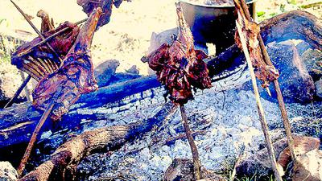

Goat's Meat Muchomo Recipe

Desciption
How to Barbeque Goat Meat the Traditional African Way (Enyama Enjokye/Muchomo)
Ingredients
Muchoma Cooking Method
- Cut your goat meat into pieces
- Put on Skewers “Obuti”
- Roast over glowing charcoal
- When it heats up, sprinkle salt as you turn the meat until you add enough.
- If heat is too much, reduce it by pouring some ash or removing some of the
charcoal or put some banana peelings or put some banana stems (bigogo)
or pour some water.
- Keep turning until meat is cooked.
- Use of a temporally barbecueing stove